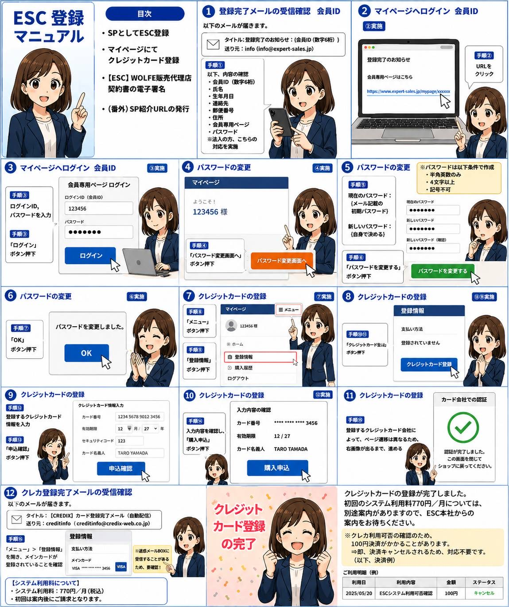

登録完了メールを確認する
送信元「info（info@expert-sales.jp）」から届く「登録完了のお知らせ」を開き、6桁の会員IDを確認します。
氏名、生年月日、連絡先、住所、会員専用ページURL、初期パスワードなど、登録内容も確認してください。
ESC登録マニュアル
ESC REGISTRATION MANUAL
登録完了メールの確認から、クレジットカード登録完了までを順番に説明します。
送信元「info（info@expert-sales.jp）」から届く「登録完了のお知らせ」を開き、6桁の会員IDを確認します。
氏名、生年月日、連絡先、住所、会員専用ページURL、初期パスワードなど、登録内容も確認してください。
メール内の「会員専用ページはこちら」に記載されたURLをタップします。
ログインID欄に6桁の会員ID、パスワード欄にメール記載の初期パスワードを入力し、「ログイン」を押します。
マイページに表示される「パスワード変更画面へ」を押します。
現在のパスワードに初期パスワードを入力し、自分で決めた新しいパスワードを2回入力します。
入力後、「パスワードを変更する」を押します。
「パスワードを変更しました」と表示されたら、「OK」を押します。
マイページ右上の「メニュー」を押し、「登録情報」を選びます。
登録情報の「支払い方法」から「クレジットカード登録」を押します。
カード番号、有効期限、セキュリティコード、カード名義人を入力して「申込確認」を押します。
カード番号の下4桁、有効期限、カード名義人を確認し、「購入申込」を押します。
カード会社によって認証画面は異なります。画面の案内に従って認証し、完了後はショップ画面へ戻ります。
送信元「creditinfo（creditinfo@credix-web.co.jp）」から届くカード登録完了メールを確認します。
マイページの「登録情報」を開き、支払い方法にメインカードのブランドと下4桁が表示されていれば完了です。
月額770円（税込）です。初回請求については別途案内があります。
カードが利用可能か確認するため、一時的に100円決済が行われる場合があります。すぐに取消処理されるため、対応は不要です。
